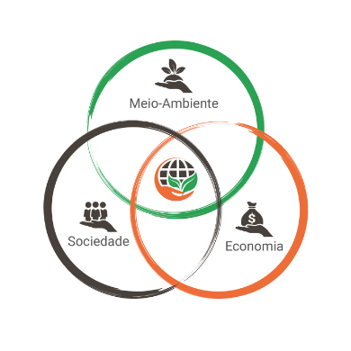

A TechBins é uma empresa de tecnologia voltada para o desenvolvimento de soluções inovadoras que contribuem para a modernização da gestão urbana e ambiental. Fundada com o propósito de aliar inteligência tecnológica à sustentabilidade, atuamos com compromisso, ética e excelência em todas as etapas do nosso trabalho.
Nossa trajetória é marcada por uma visão estratégica voltada ao futuro. Investimos continuamente em pesquisa, inovação e parcerias para oferecer produtos e serviços que atendam às necessidades reais do mercado e gerem impacto positivo para a sociedade. Acreditamos que o avanço tecnológico deve caminhar lado a lado com a responsabilidade ambiental, social e econômica.
Contamos com uma equipe multidisciplinar, altamente qualificada, comprometida com a entrega de soluções eficientes, escaláveis e seguras. Nosso modelo de atuação é pautado na proximidade com o cliente, escuta ativa e busca constante pela melhoria contínua.
Entre nossas principais áreas de atuação está o desenvolvimento de sistemas inteligentes para a gestão de resíduos sólidos, como o monitoramento de nível de ocupação de lixeiras — uma solução que reflete nosso compromisso com cidades mais inteligentes e sustentáveis.

Na TechBins, trabalhamos todos os dias para ser referência em tecnologia aplicada à gestão pública e ambiental, contribuindo para um futuro mais eficiente, limpo e conectado.
A coleta de lixo hoje enfrenta desafios como rotas ineficientes, desperdício de combustível e altos custos de manutenção dos caminhões. Esses problemas impactam diretamente o meio ambiente e o bolso das cidades. Nosso projeto surgiu para mudar esse cenário, propondo soluções inteligentes que garantem uma coleta mais sustentável, econômica e alinhada com as necessidades reais das empresas.
Na TechBins, acreditamos que a tecnologia pode transformar a maneira como cuidamos do nosso planeta. Por isso, desenvolvemos uma solução inteligente de monitoramento do nível de ocupação de lixeiras, que ajuda empresas que fazem coleta de lixo de grandes geradores de resíduos a gerenciarem suas operações de forma mais eficiente, econômica e sustentável.
Nosso sistema utiliza sensores de alta precisão e uma plataforma de monitoramento em tempo real para indicar quando cada lixeira precisa ser esvaziada. Isso reduz rotas desnecessárias, economiza combustível, evita o transbordo de resíduos e contribui diretamente para a preservação do meio ambiente.
Mais do que oferecer uma solução tecnológica, queremos impulsionar uma mudança de mentalidade: cidades mais limpas, processos mais inteligentes e um futuro mais sustentável.

Nossa missão é transformar a gestão de resíduos urbanos por meio da tecnologia, oferecendo soluções inteligentes de monitoramento de lixeiras que otimizem a coleta, reduzam o impacto ambiental e promovam cidades mais limpas e sustentáveis.
Ser referência global em inovação para a gestão eficiente de resíduos, liderando a transição para cidades inteligentes com soluções que unem sustentabilidade, tecnologia e qualidade de vida.
Compromisso com a sustentabilidade, inovação constante, responsabilidade social, respeito ao meio ambiente, ética em todas as ações e foco na excelência dos resultados para nossos clientes e parceiros.
Bruno Prado
Fernanda Henckel
Guilherme Martins
Leonardo Fernandes
Lucas Aquino
Nicolas Javed


techbins@gmail.com
+55 (11) 999999999